library(fixes)
library(fixest)
library(dplyr)


はじめに
本ページでは、Difference-in-Differences (DiD)の推定とイベントスタディを行うパッケージ、fixesについて説明します。
2025年の年始から開発してきたパッケージで、試行錯誤を重ねながら現在はバージョン0.11.0になりました。
Noteご意見待ってます
実戦経験が足りないパッケージなので、挙動がおかしかったり、こういう機能にも対応してほしいということがあれば、ページ下のコメントからどしどしお寄せください。こぢんまりしたページなので、いただいたものは余裕で全部対応できると思います。
バージョン0.8の最大の目玉は、Staggered DiDに対応する3つの推定量の追加です。バージョン0.9〜0.10ではさらに2つの推定量が追加されました。run_es()のestimator引数で選択できます。
バージョン0.11では推定量の追加ではなく、honest_sensitivity()・run_did()・calc_att()の3つの新関数が追加されました。それぞれ平行トレンドへの感度分析、単一係数のDiD推定、ATT集計に対応します。
| 推定量 | 引数 | データ | 参考文献 |
|---|---|---|---|
| Classic TWFE | estimator = "twfe" |
Panel | — |
| Callaway-Sant’Anna | estimator = "cs" |
Panel | Callaway & Sant’Anna (2021) |
| Sun-Abraham | estimator = "sa" |
Panel | Sun & Abraham (2021) |
| Borusyak-Jaravel-Spiess | estimator = "bjs" |
Panel | Borusyak, Jaravel & Spiess (2024) |
| Two-Way Mundlak | estimator = "twm" |
Panel | Wooldridge (2025) |
| FLEX | estimator = "flex" |
繰り返しクロスセクション | Deb, Norton, Wooldridge & Zabel (2024) |
加えて、Callaway-Sant’Anna推定量に対してbootstrap simultaneous confidence bandsにも対応しています。
インストール
CRANからインストールできます。
install.packages("fixes")開発版はGitHubからインストールできます。
# install.packages("pak")
pak::pak("yo5uke/fixes")準備
パッケージを読み込みます。
使用するデータはfixestパッケージのbase_didとbase_staggです。
base_staggはStaggered DiDのデモ用データですが、never-treated（処置を受けないユニット）のyear_treatedが10000になっています。バージョン0.8からはnever-treatedをNAで指定できるようになったので、変換しておきます。
df_stagg <- base_stagg |>
mutate(timing = if_else(year_treated == 10000, NA_real_, year_treated))| y | x1 | id | period | post | treat |
|---|---|---|---|---|---|
| 2.87530627 | 0.5365377 | 1 | 1 | 0 | 1 |
| 1.86065272 | -3.0431894 | 1 | 2 | 0 | 1 |
| 0.09416524 | 5.5768439 | 1 | 3 | 0 | 1 |
| 3.78147485 | -2.8300587 | 1 | 4 | 0 | 1 |
| -2.55819959 | -5.0443544 | 1 | 5 | 0 | 1 |
| 1.72873240 | -0.6363849 | 1 | 6 | 1 | 1 |
| 6.28423629 | -2.1298837 | 1 | 7 | 1 | 1 |
| 4.76688778 | 3.4918558 | 1 | 8 | 1 | 1 |
| 5.34753392 | 0.8379861 | 1 | 9 | 1 | 1 |
| 4.95146934 | 0.6338890 | 1 | 10 | 1 | 1 |
| id | year | year_treated | time_to_treatment | treated | treatment_effect_true | x1 | y | timing |
|---|---|---|---|---|---|---|---|---|
| 90 | 1 | 2 | -1 | 1 | 0 | -1.09470213 | 0.01722971 | 2 |
| 89 | 1 | 3 | -2 | 1 | 0 | -3.71006765 | -4.58084528 | 3 |
| 88 | 1 | 4 | -3 | 1 | 0 | 2.52744015 | 2.73817174 | 4 |
| 87 | 1 | 5 | -4 | 1 | 0 | -0.72042631 | -0.65103066 | 5 |
| 86 | 1 | 6 | -5 | 1 | 0 | -3.67116779 | -5.33381664 | 6 |
| 85 | 1 | 7 | -6 | 1 | 0 | -0.31521367 | 0.49562631 | 7 |
| 84 | 1 | 8 | -7 | 1 | 0 | 0.32856334 | -1.58378245 | 8 |
| 83 | 1 | 9 | -8 | 1 | 0 | -0.08850915 | -1.33526257 | 9 |
| 82 | 1 | 10 | -9 | 1 | 0 | -2.34951611 | -1.35136167 | 10 |
| 81 | 1 | 10000 | -1000 | 0 | 0 | 2.31318716 | 1.77231442 | NA |
df_staggのtiming列はコホート（各ユニットの処置開始年）を示し、never-treatedのユニットはNAになっています。
run_es()
run_es()はイベントスタディを推定する関数です。主な引数は以下の通りです。
run_es(
data,
outcome,
treatment = NULL,
time,
timing,
fe = NULL,
lead_range = NULL,
lag_range = NULL,
covariates = NULL,
cluster = NULL,
weights = NULL,
baseline = -1L,
interval = 1,
time_transform = FALSE,
unit = NULL,
staggered = FALSE,
estimator = c("twfe", "cs", "sa", "bjs", "twm", "flex"),
control_group = "nevertreated",
anticipation = 0L,
conf.level = 0.95,
vcov = "HC1",
vcov_args = list(),
bootstrap = FALSE,
B = 999L,
boot_seed = NULL,
group = NULL,
trends = FALSE
)| 引数 | 説明 |
|---|---|
data |
パネルデータを含むデータフレーム |
outcome |
結果変数（変数名または式、例：log(y)） |
treatment |
処置変数（0/1または論理値）。estimator = "twfe"の場合のみ使用 |
time |
時間変数（数値型またはDate型） |
timing |
TWFEの場合：全ユニット共通の数値/Date（staggered = TRUEなら変数名）。その他の推定量：各ユニットの処置開始時点を示す変数（never-treatedはNA） |
fe |
固定効果の指定（片側式、例：~ id + year）。estimator = "cs"の場合は無視 |
lead_range, lag_range |
処置前後の期間範囲。NULLの場合は自動決定 |
covariates |
追加の共変量（片側式、例：~ x1 + log(x2)）。estimator = "twm", "flex"では共変量インタラクションを自動構築 |
cluster |
クラスター指定（片側式~ id、列名の文字列、またはベクトル） |
weights |
観測ウェイト（変数名/片側式または数値ベクトル） |
baseline |
ベースライン期間（デフォルト：-1）。参照期間として結果から除外 |
unit |
ユニット識別変数。estimator = "cs", "sa", "bjs", "twm"では必須 |
staggered |
TRUEの場合、timing変数を使用（TWFE・SAの場合） |
estimator |
推定量の選択（"twfe", "cs", "sa", "bjs", "twm", "flex"） |
control_group |
CSの場合の対照群。"nevertreated"（デフォルト）または"notyettreated" |
anticipation |
CSの場合の予期的処置効果の期間数（デフォルト：0） |
conf.level |
信頼水準（デフォルト：0.95）。ベクトルで複数指定可能 |
vcov |
分散共分散行列の種類（デフォルト："HC1"） |
bootstrap |
TRUEの場合、simultaneous confidence bandsを計算（estimator = "cs"のみ） |
B |
ブートストラップの反復回数（デフォルト：999） |
boot_seed |
ブートストラップの乱数シード（再現性のため） |
group |
estimator = "flex"専用。繰り返し横断面データの処置グループ識別変数（\(R_{ig}\)） |
trends |
estimator = "twm"専用。TRUEの場合、コホート別線形トレンドを追加（Wooldridge 2025 Section 8）。各コホート2期以上の処置前期間が必要 |
Classic TWFE
処置タイミングが全ユニットで共通の場合はestimator = "twfe"（デフォルト）を使います。base_didでは全ユニットが6期目に処置されます。
es_twfe <- run_es(
data = base_did,
outcome = y,
treatment = treat,
time = period,
timing = 6,
fe = ~ id + period,
cluster = ~id
)print()で推定の概要を確認できます。
print(es_twfe)Event Study Result (fixes)
N: 1080 | Units: NA | Treated units: 1080 | Never-treated: NA
FE: id + period
VCOV: cluster | Cluster: id
Method: classic | lead_range: 5 lag_range: 4 baseline: -1 Staggered DiD
Staggered DiDではstaggered = TRUEを指定し、unitでユニット識別変数を指定します。3つの推定量を試してみます。
Sun-Abraham（estimator = "sa"）
es_sa <- run_es(
data = df_stagg,
outcome = y,
treatment = treated,
time = year,
timing = timing,
unit = id,
fe = ~ id + year,
staggered = TRUE,
estimator = "sa",
cluster = ~id
)コホート×相対時間のインタラクション項をコホートシェアで集計する手法です。内部ではfixest::sunab()と数値的に同一の結果を返します。
Callaway-Sant’Anna（estimator = "cs"）
es_cs <- run_es(
data = df_stagg,
outcome = y,
time = year,
timing = timing,
unit = id,
staggered = TRUE,
estimator = "cs",
control_group = "nevertreated"
)グループ時間ATT（\(\text{ATT}(g,t)\)）を計算し、集計する手法です。treatment引数は不要で、timingにNAを使うことでnever-treatedを指定します。control_groupで対照群を"nevertreated"か"notyettreated"から選べます。
TipCSの特徴
CSは他の推定量と異なり、fe引数を使いません（内部で適切に対処されます）。また、timingのNAを直接 never-treated として認識するので、10000などのダミー値は不要です。
Borusyak-Jaravel-Spiess（estimator = "bjs"）
es_bjs <- run_es(
data = df_stagg,
outcome = y,
time = year,
timing = timing,
unit = id,
staggered = TRUE,
estimator = "bjs"
)インピュテーション推定量です。未処置観測値（never-treated + not-yet-treated）だけでTWFEを推定し、処置観測値の反事実結果をインピュートして処置効果を計算します。
Two-Way Mundlak（estimator = "twm"）
es_twm <- run_es(
data = df_stagg,
outcome = y,
time = year,
timing = timing,
unit = id,
fe = ~ id + year,
staggered = TRUE,
estimator = "twm",
cluster = ~id
)Wooldridge (2025) による Two-Way Mundlak (TWM) 推定量です。コホート×カレンダー時間の処置セルインジケーターをコホートシェアで集計します。共変量なし・トレンドなしの場合はestimator = "sa"と代数的に同一です。
trends = TRUEを指定すると、コホート別の線形トレンド項を追加してコホートごとに異なる時間トレンドを補正できます（各コホートに2期以上の処置前期間が必要）。
es_twm_trends <- run_es(
data = df_stagg,
outcome = y,
time = year,
timing = timing,
unit = id,
fe = ~ id + year,
staggered = TRUE,
estimator = "twm",
trends = TRUE,
cluster = ~id
)
Note
trends = TRUEの出力について
trends = TRUEの場合、コホート別トレンドを用いた反事実を構築するため、pre-trendのテストは別途trends = FALSEのモデルで行う必要があります。出力にはrelative_time >= 0のみ含まれます。
Repeated Cross-Section (RCS) データ
パネルデータではなく繰り返し横断面 (Repeated Cross-Section, RCS) データでのDiDにはestimator = "flex"を使います。
fixestパッケージには適切なRCSのデモデータがないため、base_staggを用いた擬似的な例を示します。
FLEX（estimator = "flex"）
# RCSを想定：unit固定効果の代わりにgroup識別変数を使用
es_flex <- run_es(
data = df_stagg,
outcome = y,
time = year,
timing = timing,
estimator = "flex",
group = id
)Deb, Norton, Wooldridge & Zabel (2024) による FLEX (Flexible Linear Model) 推定量です。ユニット固定効果の代わりにグループ固定効果（コホート固定効果）を使い、同一個人を繰り返し観察できないRCSデータに対応します。
group引数で各観測の処置グループ（コホート）を識別する変数を指定します。グループ固定効果 \(\alpha_g\) と時間固定効果 \(\lambda_t\) を含むOLSにより推定します。デフォルトのクラスターはグループ単位です。
TipFLEXの適用場面
FLEXはパネルデータにも適用できますが、本来はRCSデータ（例：毎期異なるサンプルを調査するアンケートデータ）向けです。パネルデータであればestimator = "twm"や"bjs"の方が情報を有効活用できます。
Bootstrap Simultaneous Confidence Bands
通常のポイントワイズ信頼区間は各期間ごとに誤差率をコントロールします。イベントスタディでは多数の期間の係数を同時に表示するため、「少なくとも1つの区間が誤って0を外す確率」は名目水準よりも高くなります。
Simultaneous confidence bands（Callaway & Sant’Anna 2021）はすべての期間の係数が同時に帯に含まれる確率を \(1-\alpha\) 以上に保証します。
bootstrap = TRUEで利用できます（estimator = "cs"のみ）。
es_cs_boot <- run_es(
data = df_stagg,
outcome = y,
time = year,
timing = timing,
unit = id,
staggered = TRUE,
estimator = "cs",
control_group = "nevertreated",
bootstrap = TRUE,
B = 999,
boot_seed = 42
)boot_seedを設定しておくと結果を再現できます。
plot_es()
基本的にはplot_es(es_twfe)の書き方でプロットを出力できます。
通常のDiD（TWFE）
plot_es(es_twfe)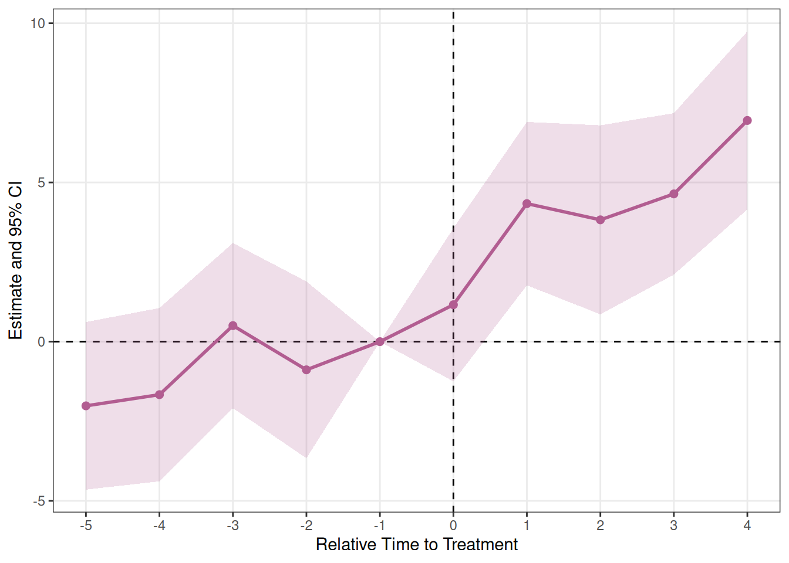
Staggered DiD 推定量の比較
plot_es(es_sa)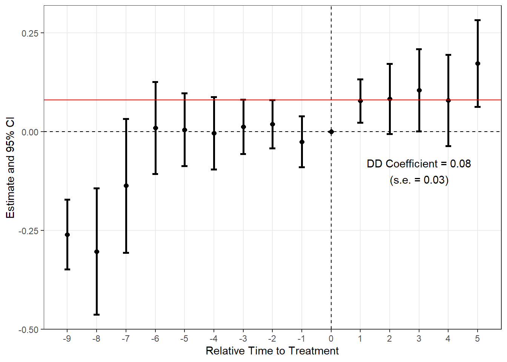
plot_es(es_cs)plot_es(es_bjs)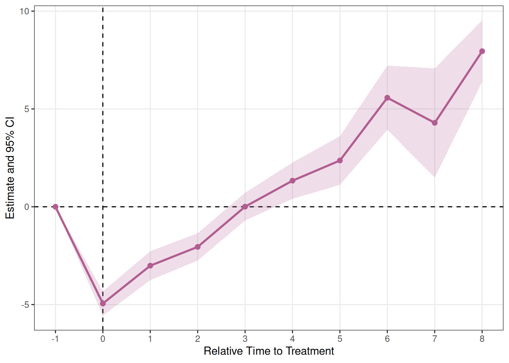
plot_es(es_twm)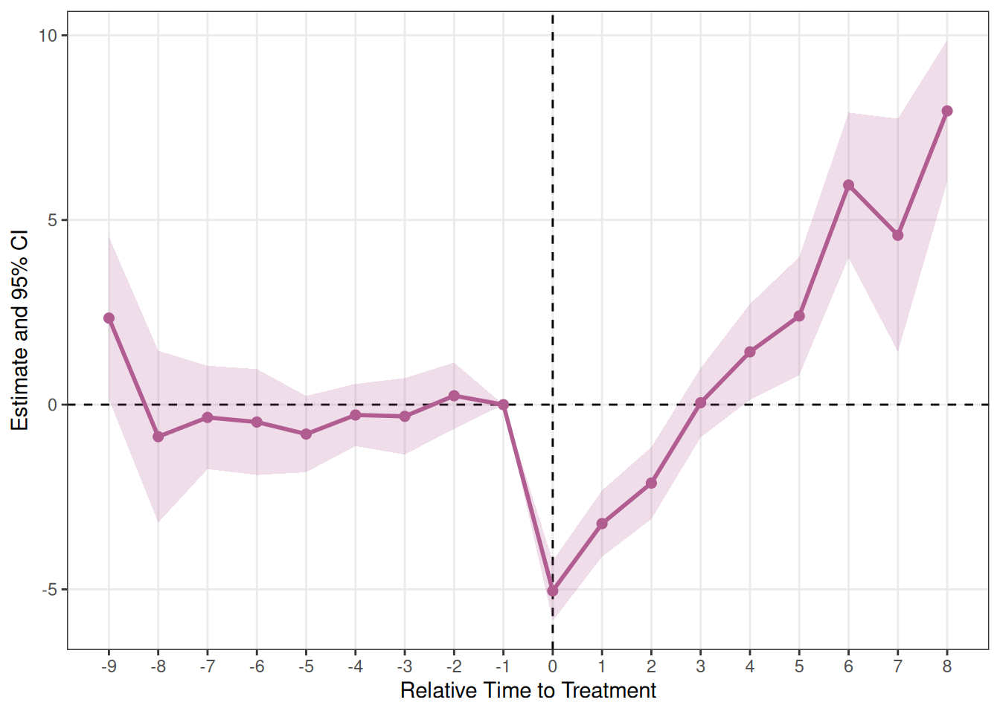
plot_es(es_twm_trends)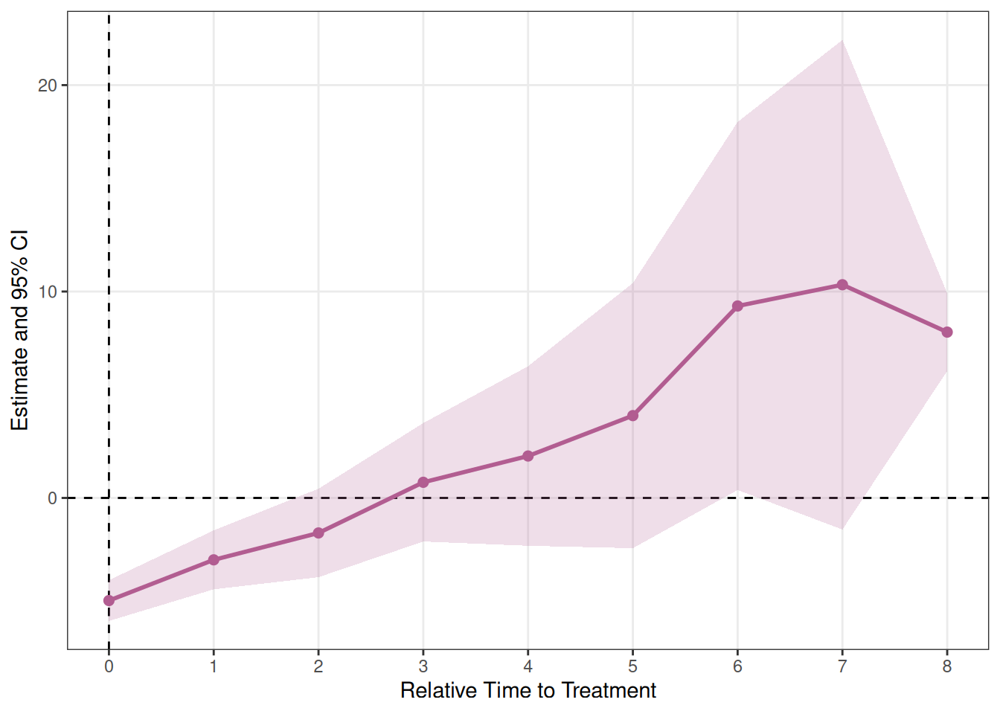
plot_es(es_flex)
Simultaneous confidence bandsの表示
show_simultaneous = TRUEでbootstrap simultaneous confidence bandsをポイントワイズ信頼区間に重ねて表示できます。濃い帯がポイントワイズ、薄い帯がsimultaneous confidence bandsです。
plot_es(es_cs_boot, show_simultaneous = TRUE)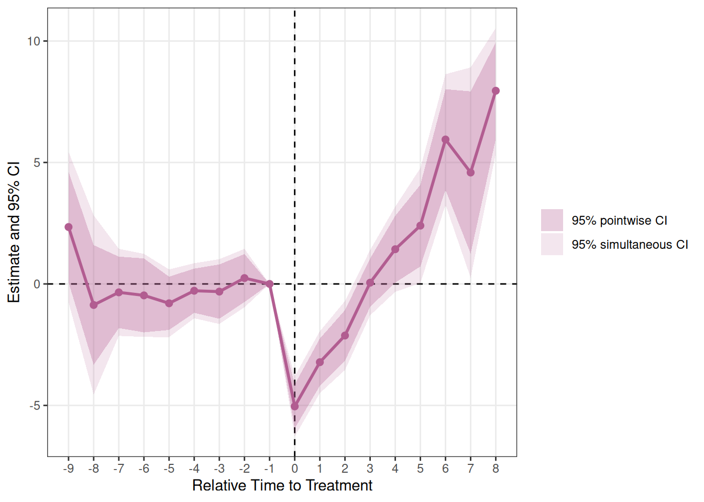
使い方
plot_es(
data,
ci_level = 0.95,
type = "ribbon",
vline_val = 0,
vline_color = "#000",
hline_val = 0,
hline_color = "#000",
linewidth = 1,
pointsize = 2,
alpha = 0.2,
barwidth = 0.2,
color = "#B25D91FF",
fill = "#B25D91FF",
theme_style = "bw",
show_simultaneous = FALSE
)ci_level：表示する信頼水準（デフォルト：0.95）type：ribbonとerrorbarが指定可能vline_val・hline_val：縦・横の破線の位置vline_color・hline_color：縦・横の破線の色linewidth・pointsize：折れ線の太さ・点の大きさalpha：リボンの透明度color・fill：線・点・リボンの色theme_style："bw"、"minimal"、"classic"から選択show_simultaneous：simultaneous confidence bandsを重ねて表示（bootstrap = TRUEの結果が必要）
エラーバーに変えてみます。
plot_es(es_twfe, type = "errorbar")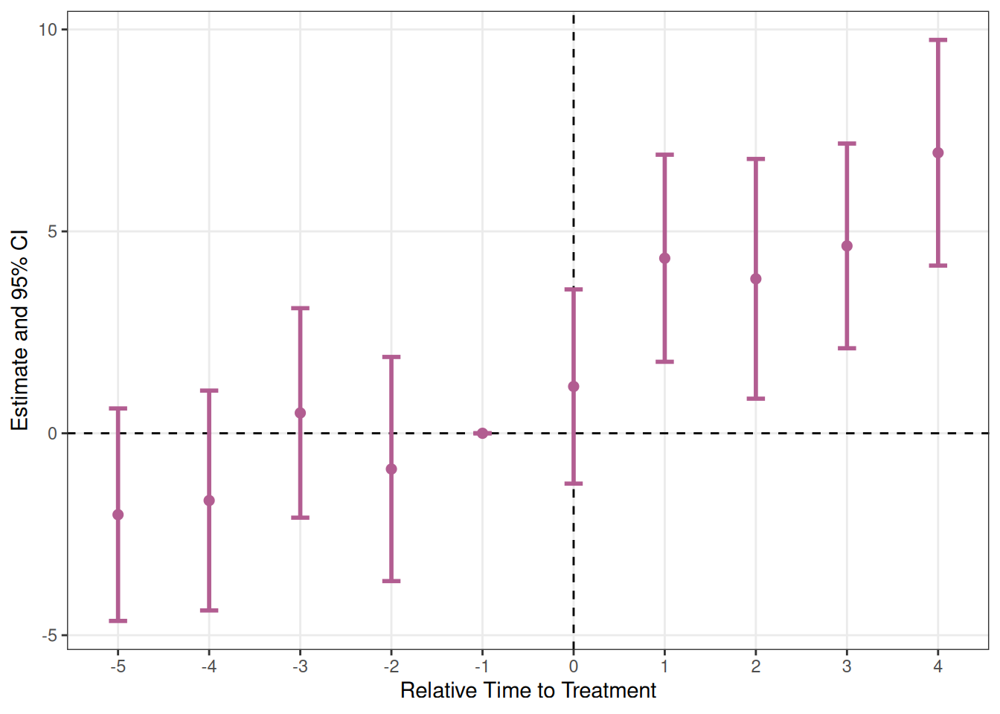
色やテーマも変えられます。
plot_es(es_twfe, type = "errorbar", color = "#000", theme_style = "minimal")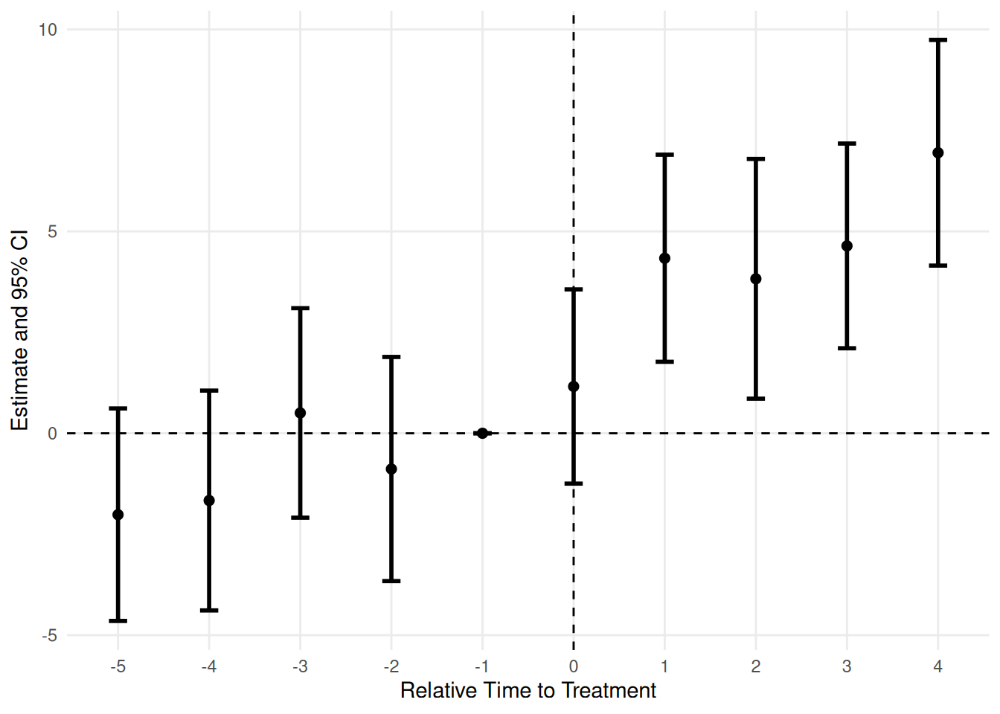
ggplotベースなのでggplotの関数をつなげることも可能です。
library(ggplot2)
plot_es(es_twfe) +
labs(title = "Event Study: Classic TWFE")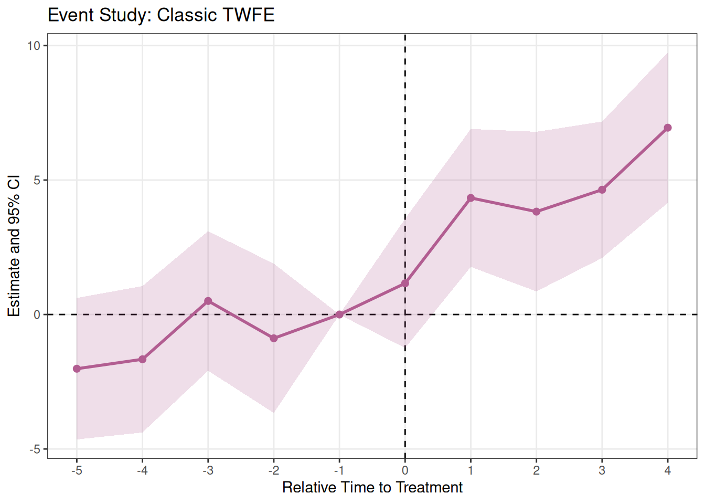
plot_att_gt()
CSの推定結果には、コホート×カレンダー時間の全\(\text{ATT}(g,t)\)行列が含まれています。plot_att_gt()でこの行列全体を可視化できます。
ヒートマップ
plot_att_gt(es_cs)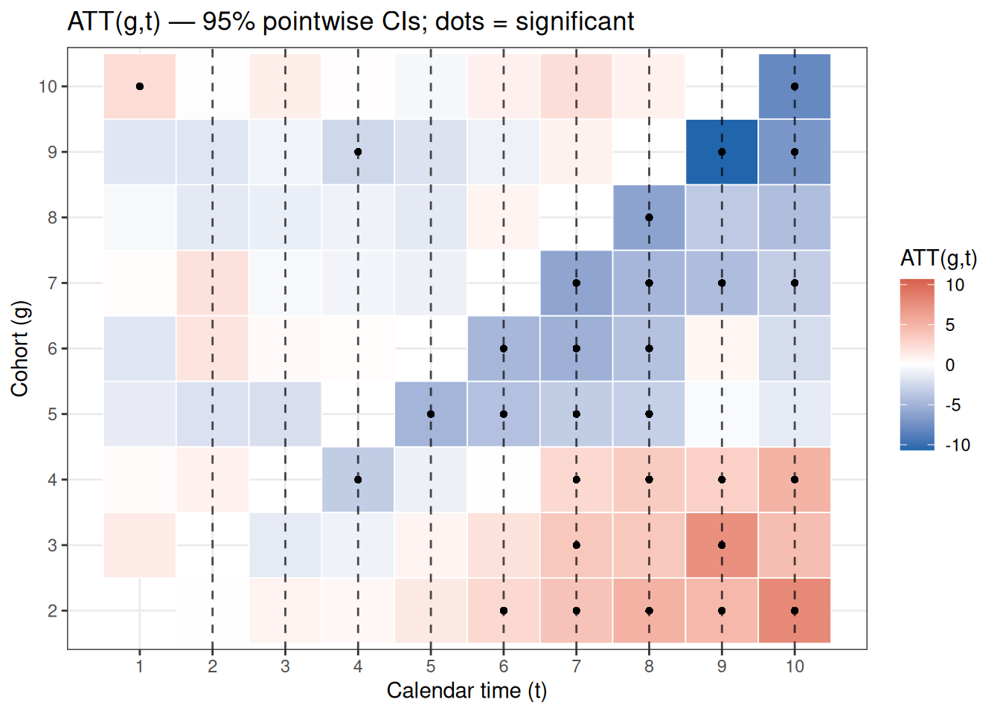
横軸がカレンダー時間 \(t\)、縦軸がコホート \(g\)（処置開始年）で、セルの色が\(\text{ATT}(g,t)\)の推定値を示します。ポイントワイズ信頼区間が0を除外するセルには黒点（●）が付きます。
コホート別時系列
plot_att_gt(es_cs, type = "facet")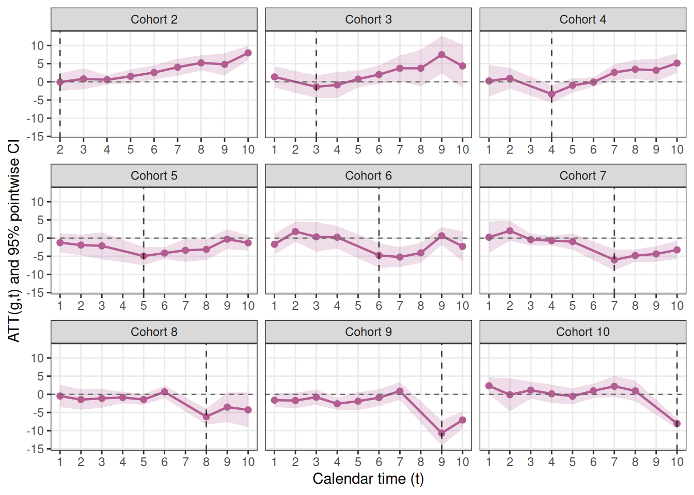
各コホートについて、カレンダー時間に沿った\(\text{ATT}(g,t)\)の推移をパネル表示します。
ブートストラップ結果との組み合わせ
bootstrap = TRUEで推定した結果では、ヒートマップにsimultaneously significantなセルのダイヤモンドマーカー（◇）が追加されます。
plot_att_gt(es_cs_boot)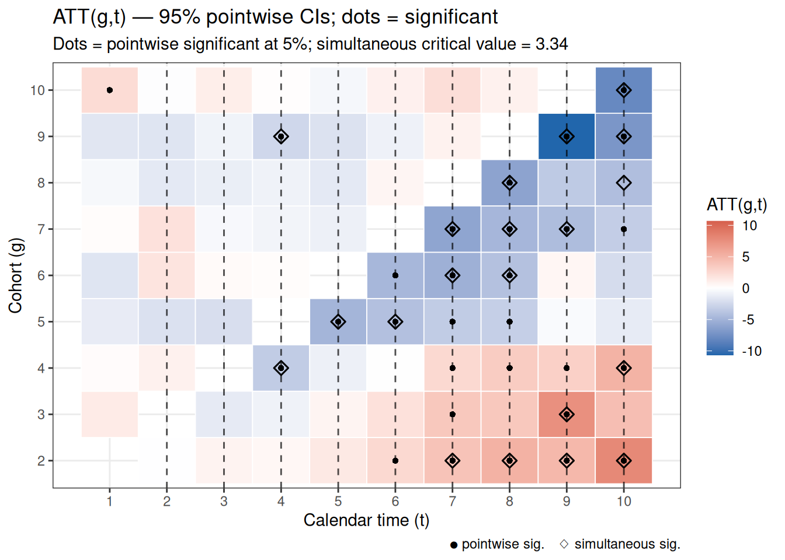
plot_att_gt(es_cs_boot, type = "facet")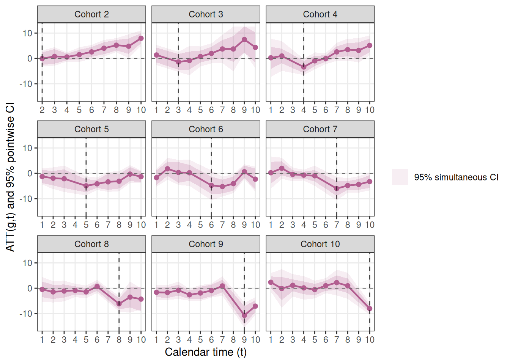
plot_es_interactive()
plot_es_interactive()でインタラクティブなプロットを作成できます。マウスオーバーで推定値・信頼区間・標準誤差・p値が表示されます。論文用ではないですが、結果の確認やプレゼンの場で便利です。
plot_es_interactive(es_cs)こちらもshow_simultaneous = TRUEでsimultaneous confidence bandsを重ねて表示できます。
plot_es_interactive(es_cs_boot, show_simultaneous = TRUE)run_did()
run_did()はイベントスタディではなく、単一の処置効果係数を返す classic TWFE DiD 推定関数です。run_es()と同じ NSE 記法で書けます。
処置変数の指定方法は2通りあります。
Option A — 事前に \(D_{it}\) を構築する方法：
# D_it = 処置グループ × 処置後期間
base_did$D <- as.integer(base_did$treat & base_did$period >= 6)
res_did <- run_did(
base_did,
outcome = y,
treatment = D,
fe = ~ id + period,
cluster = ~id
)
print(res_did)Option B — timingを使って自動で \(D_{it}\) を構築する方法：
res_did <- run_did(
base_did,
outcome = y,
treatment = treat, # 処置グループ識別変数（0/1）
time = period,
timing = 6, # 処置開始時点
fe = ~ id + period,
cluster = ~id
)
print(res_did)DiD Estimation [TWFE]
N = 1080 obs | 275 treated obs
Timing: treat (post = time >= 6)
FE: id + period
VCOV: cluster | Cluster: id
term estimate std.error statistic p.value
1 treat 4.99 0.521 9.58 4.65e-16broom・modelsummaryとの互換性があります。
broom::tidy(res_did)
broom::glance(res_did)
modelsummary::modelsummary(res_did)使い方
run_did(
data,
outcome,
treatment,
timing = NULL,
fe = NULL,
unit = NULL,
time = NULL,
covariates = NULL,
cluster = NULL,
weights = NULL,
conf.level = 0.95,
vcov = "HC1",
vcov_args = list()
)| 引数 | 説明 |
|---|---|
data |
パネルデータを含むデータフレーム |
outcome |
結果変数（変数名または式、例：log(y)） |
treatment |
処置変数。timing = NULL（デフォルト）の場合は事前構築済みの \(D_{it}\)（0/1）。timingを指定する場合は処置グループ識別変数（ユニット固定の0/1）。 |
timing |
処置開始時点（スカラー数値）。指定するとtreatment × (time >= timing)で \(D_{it}\) を自動構築。timeの指定も必要。 |
fe |
固定効果の指定（片側式）。NULLかつunit・timeが両方指定されている場合は~ unit + timeを自動推定 |
unit |
ユニット識別変数（メタデータ用・fe自動推定用） |
time |
時間変数。timing指定時の \(D_{it}\) 構築にも使用 |
covariates |
追加の共変量（片側式） |
cluster |
クラスター指定（片側式・文字列・数値ベクトル） |
weights |
観測ウェイト |
conf.level |
信頼水準（デフォルト：0.95）。ベクトルで複数指定可能 |
vcov |
分散共分散行列の種類（デフォルト："HC1"） |
calc_att()
calc_att()はATT（処置を受けた者の平均処置効果）を集計する関数です。run_es()が相対時間ごとのダイナミックな効果を返すのに対し、calc_att()はそれを集計した単一（またはコホート・カレンダー時間別）の推定値を返します。
対応推定量は"cs"（Callaway-Sant’Anna 2021）と"bjs"（Borusyak et al. 2024）です。
# Overall ATT（全(g,t)ペアの加重平均）
att_simple <- calc_att(
data = df_stagg,
outcome = y,
time = year,
timing = timing,
unit = id,
estimator = "cs",
aggregation = "simple"
)
print(att_simple)ATT Estimation [estimator: CS | aggregation: Simple (overall)]
N = 950 obs | 95 units | 45 treated
group estimate std.error statistic p.value conf_low_95 conf_high_95
1 NA -0.755 0.226 -3.35 0.000813 -1.2 -0.313# コホート別 ATT
att_cohort <- calc_att(
data = df_stagg,
outcome = y,
time = year,
timing = timing,
unit = id,
estimator = "cs",
aggregation = "by_cohort"
)
print(att_cohort)ATT Estimation [estimator: CS | aggregation: By cohort]
N = 950 obs | 95 units | 45 treated
group estimate std.error statistic p.value conf_low_95 conf_high_95
1 2 3.04 0.386 7.88 3.36e-15 2.285 3.80
2 3 2.48 0.740 3.35 8.08e-04 1.028 3.93
3 4 1.42 0.462 3.07 2.15e-03 0.513 2.32
4 5 -2.86 0.532 -5.38 7.40e-08 -3.908 -1.82
5 6 -3.15 0.718 -4.38 1.19e-05 -4.554 -1.74
6 7 -4.61 0.600 -7.69 1.49e-14 -5.789 -3.44
7 8 -4.65 1.130 -4.12 3.79e-05 -6.867 -2.44
8 9 -8.87 1.074 -8.25 1.53e-16 -10.974 -6.76
9 10 -8.04 0.703 -11.44 2.76e-30 -9.415 -6.66# カレンダー時間別 ATT
att_time <- calc_att(
data = df_stagg,
outcome = y,
time = year,
timing = timing,
unit = id,
estimator = "cs",
aggregation = "by_time"
)
print(att_time)ATT Estimation [estimator: CS | aggregation: By calendar time]
N = 950 obs | 95 units | 45 treated
group estimate std.error statistic p.value conf_low_95 conf_high_95
1 2 -0.062 1.246 -0.0498 0.9603 -2.50 2.380
2 3 -0.285 1.081 -0.2638 0.7919 -2.40 1.834
3 4 -1.218 0.762 -1.5995 0.1097 -2.71 0.275
4 5 -0.913 0.563 -1.6214 0.1049 -2.02 0.191
5 6 -0.880 0.520 -1.6916 0.0907 -1.90 0.140
6 7 -0.714 0.593 -1.2042 0.2285 -1.88 0.448
7 8 -0.824 0.566 -1.4550 0.1457 -1.93 0.286
8 9 -0.348 0.615 -0.5663 0.5712 -1.55 0.857
9 10 -0.978 0.579 -1.6895 0.0911 -2.11 0.157使い方
calc_att(
data,
outcome,
time,
timing,
unit,
estimator = c("cs", "bjs"),
aggregation = c("simple", "by_cohort", "by_time"),
control_group = "nevertreated",
anticipation = 0L,
conf.level = 0.95
)| 引数 | 説明 |
|---|---|
data |
パネルデータを含むデータフレーム |
outcome |
結果変数 |
time |
時間変数 |
timing |
各ユニットの処置開始時点を示す変数（never-treatedはNA） |
unit |
ユニット識別変数（必須） |
estimator |
"cs"（Callaway-Sant’Anna 2021）または"bjs"（Borusyak et al. 2024） |
aggregation |
"simple"（全体ATT、デフォルト）、"by_cohort"（コホート別）、"by_time"（カレンダー時間別） |
control_group |
CSの場合の対照群。"nevertreated"（デフォルト）または"notyettreated" |
anticipation |
CSの場合の予期的処置効果の期間数（デフォルト：0） |
conf.level |
信頼水準（デフォルト：0.95）。ベクトルで複数指定可能 |
Note
calc_att()のSEについて
CS推定量のSEはコホート間独立を仮定した解析的SEs（did::aggte()は影響関数ベースの分散を用いるため、calc_att()のSEは系統的に小さくなります）。BJS推定量のSEは \(\hat{\tau}_{it}\) のナイーブな標本標準誤差です。クラスター頑健SEs（BJS）は将来バージョンで対応予定です。
honest_sensitivity()
honest_sensitivity()は平行トレンド仮定が厳密に成立しない場合への感度分析を行う関数です（Rambachan & Roth 2023）。処置後効果の推定において、トレンドの差（差分バイアス）がどの程度の大きさまで許容できるかを評価し、処置効果の頑健な信頼集合（robust confidence set）を返します。
Important必要なパッケージ
honest_sensitivity()の実行には以下のパッケージが必要です（Suggestsのため別途インストール要）：
install.packages(c("lpSolveAPI", "Rglpk", "TruncatedNormal", "Matrix", "pracma"))現時点ではestimator = "twfe"（classic またはmethod = "sunab"）のrun_es()結果に対応しています。
# 1. TWFEでイベントスタディを推定
es_twfe_h <- run_es(
data = base_did,
outcome = y,
treatment = treat,
time = period,
timing = 6,
fe = ~ id + period,
cluster = ~id
)
# 2. 感度分析：Relative Magnitude（デフォルト）
h_rm <- honest_sensitivity(
es_twfe_h,
type = "relative_magnitude",
Mvec = c(0, 0.5, 1, 1.5, 2)
)
plot_honest(h_rm)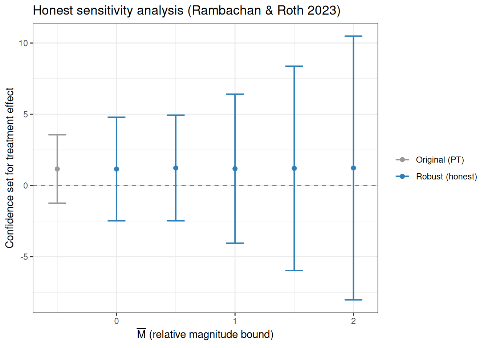
# Smoothnessによる感度分析
h_sd <- honest_sensitivity(
es_twfe_h,
type = "smoothness",
Mvec = c(0, 0.5, 1, 1.5, 2)
)
plot_honest(h_sd)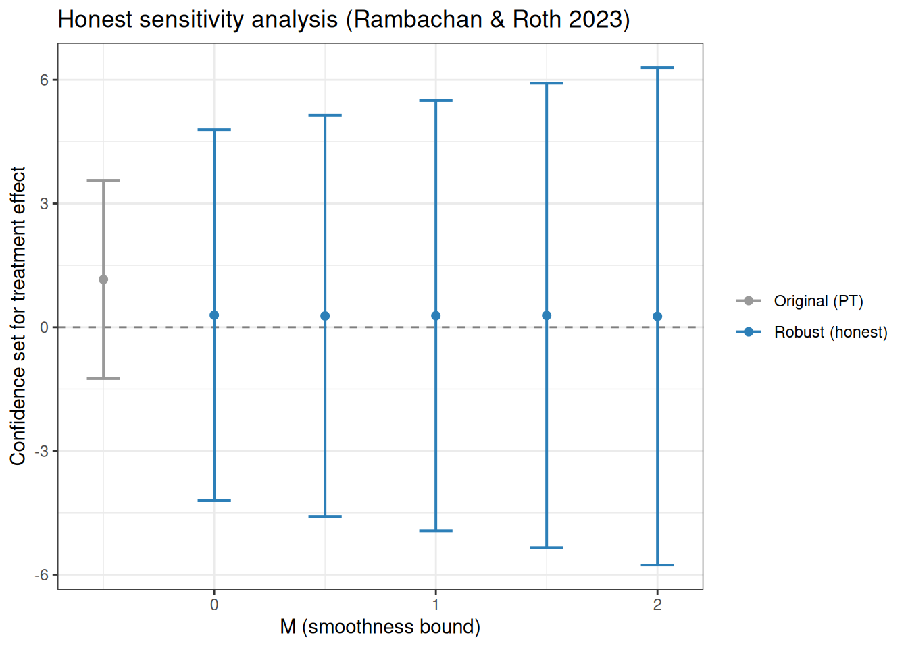
print()でbreakdown value（処置効果が有意でなくなる最大のトレンド制約の大きさ）を確認できます。
print(h_rm)Honest sensitivity analysis [Relative magnitudes (Delta^RM(Mbar))]
Method: ARP conditional | alpha = 0.05
Breakdown value: robust CI includes 0 at all reported values
M lb ub method type
1 NA -1.25 3.56 Original Original
2 0.0 -2.48 4.79 C-ARP relative_magnitude
3 0.5 -2.48 4.94 C-ARP relative_magnitude
4 1.0 -4.05 6.41 C-ARP relative_magnitude
5 1.5 -5.97 8.38 C-ARP relative_magnitude
6 2.0 -8.03 10.49 C-ARP relative_magnitude感度分析の考え方
honest_sensitivity()は Rambachan & Roth (2023) の手法に基づき、処置前後の係数ベクトル \(\hat{\beta}\) とその共分散行列 \(\hat{\Sigma}\) から出発します。差分バイアス \(\delta\) が特定の制約集合 \(\Delta\) に属すると仮定し、Andrews-Roth-Pakes (2023) の条件付モーメント不等式検定を用いて、\(1-\alpha\) の一様妥当性を持つ頑健な信頼集合を構築します。
制約ファミリーは2種類あります：
"relative_magnitude"（デフォルト）：\(\Delta^{RM}(\bar{M})\)。処置後の第2差分の大きさが、処置前の第1差分の最大値の \(\bar{M}\) 倍以下に制約。"smoothness"：\(\Delta^{SD}(M)\)。連続する差分の変化幅が \(M\) 以下に制約（トレンドの滑らかさを仮定）。
使い方
honest_sensitivity(
object = NULL, # run_es()のes_result
type = c("relative_magnitude", "smoothness"),
Mvec = NULL, # 制約パラメータのベクトル
l_vec = NULL, # 処置後期間への線形重みベクトル（デフォルト：最初の処置後期間のみ）
alpha = 0.05,
gridPoints = 1000L,
betahat = NULL, # オプション：係数ベクトルを直接渡す
sigma = NULL # オプション：共分散行列を直接渡す
)| 引数 | 説明 |
|---|---|
object |
run_es()のes_result（estimator = "twfe"） |
type |
制約ファミリー："relative_magnitude"（デフォルト）または"smoothness" |
Mvec |
制約パラメータ \(\bar{M}\)（または \(M\)）のグリッド。NULLの場合は自動設定 |
l_vec |
処置後効果への線形重みベクトル。NULLの場合は最初の処置後期間の係数を対象 |
alpha |
有意水準（デフォルト：0.05） |
gridPoints |
検定反転のグリッド点数（デフォルト：1000） |
betahat, sigma |
objectの代わりに係数ベクトル・共分散行列を直接渡す場合に使用 |
おわりに
バージョン0.11でイベントスタディ・ATT集計・感度分析が一通り揃い、DiDの実証分析に必要なツールセットが完結に近づきました。
もし使っていただいて「使いにくい」や「こんな機能が欲しい」等ありましたら、以下のコメントやGitHubのIssuesまでお願いします。